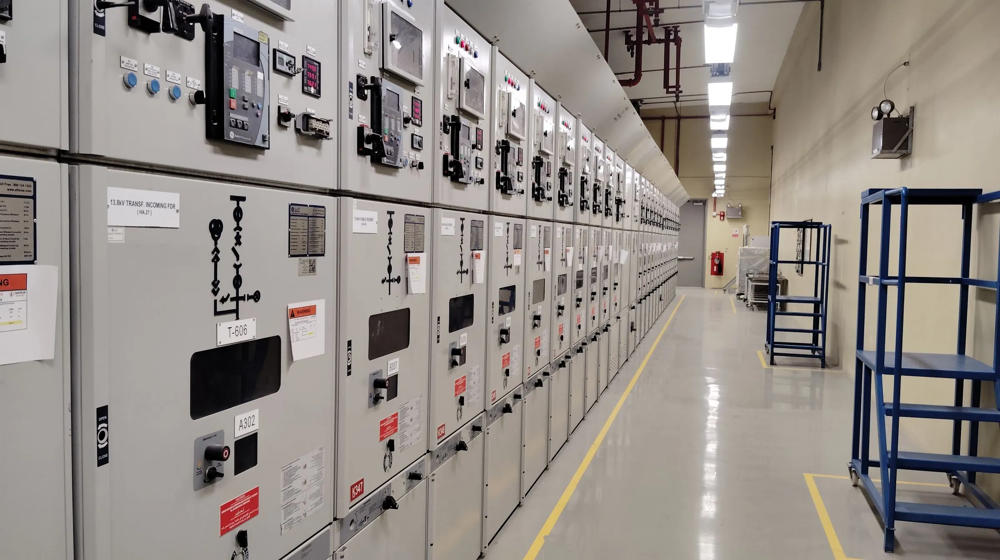
Instalacje elektryczne, pomiary, awarie.
Od wymiany gniazdka po kompleksową instalację twojej firmy.
Zadzwoń teraz +48 604 580 352- Uprawnienia SEPeksploatacja, dozór, pomiary
- Serwis Benincaautoryzowany: montaż i naprawa napędów
- Trzy województwaśląskie, opolskie, dolnośląskie
- Zapytaj, wycenimyprzy większej robocie przyjadę i obejrzę
Pracowałem między innymi dla tych firm
Co robię
Większość roboty to instalacje przemysłowe i pomiary linii technologicznych. Pełny opis znajdziesz w ofercie.
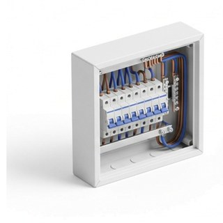
Instalacje elektryczne
Zasilanie hal, rozdzielnice, trasy kablowe i instalacja obiektowa - od projektu rozdziału po pomiary przed odbiorem.Zobacz →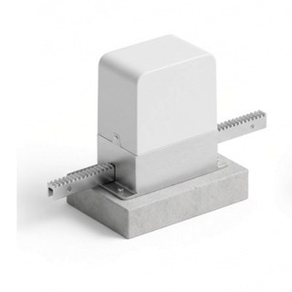
Automatyka bramowa Beninca
Dobór, dostawa i montaż. Napędy, szlabany, słupki parkingowe i bramy przemysłowe - jako autoryzowany przedstawiciel, dystrybutor i serwis marki.Zobacz →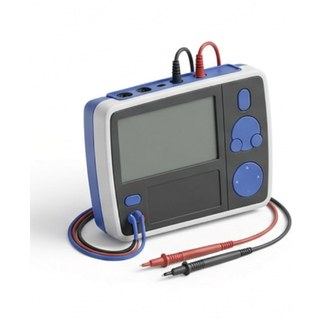
Pomiary okresowe instalacji i urządzeń
Pomiary linii technologicznych, maszyn i instalacji obiektowej, z protokołem do dokumentacji zakładu i do ubezpieczyciela.Zobacz →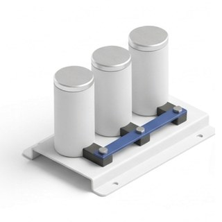
Kompensacja mocy biernej
Opłaty za moc bierną na fakturze potrafią być wyższe niż sam prąd. Dobieram i montuję baterie kondensatorów pod realny pobór zakładu.Zobacz →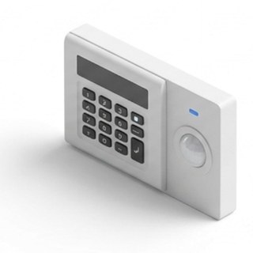
Alarmy i kontrola dostępu
Czujki, czujniki otwarcia, sygnalizacja i powiadomienie na telefon. W zakładzie kontrola dostępu - wiadomo, kto i o której wszedł.Zobacz →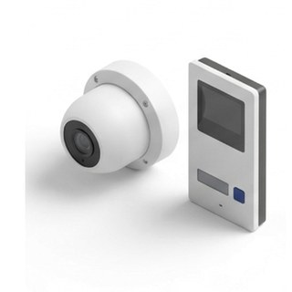
Monitoring wizyjny i wideodomofony
Kamery na wjeździe, hali i przy furtce, obraz na telefonie, nagrania na miejscu. Wideodomofon spięty z bramą.Zobacz →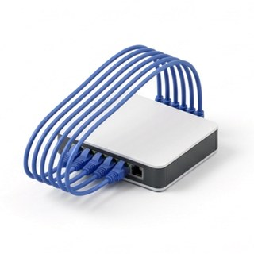
Sieci komputerowe
Okablowanie strukturalne, szafy, gniazda i punkty dostępowe - prowadzone razem z instalacją elektryczną, w tych samych trasach.Zobacz →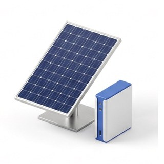
Fotowoltaika i magazyny energii
Panele na dachu i na gruncie, falownik, magazyn energii i wpięcie w istniejącą rozdzielnicę - razem z pomiarami po montażu.Zobacz →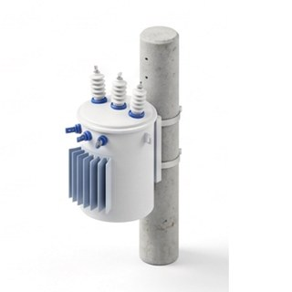
Sieci NN i SN, stacje transformatorowe
Linie kablowe i napowietrzne niskiego oraz średniego napięcia i stacje trafo - zasilanie zakładu od strony, z której przychodzi prąd.Zobacz →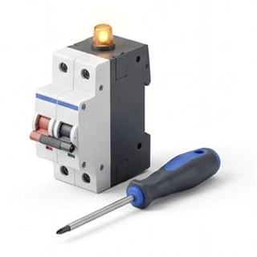
Awarie i usterki
Stanęła linia albo zgasła połowa obiektu? Szukam przyczyny obwód po obwodzie i usuwam ją, a nie podnoszę bezpiecznik „na próbę”.Zobacz →
Zdjęcia z realizacji
Rozdzielnice, trasy kablowe, pomiary - stan z dnia oddania, bez upiększania.
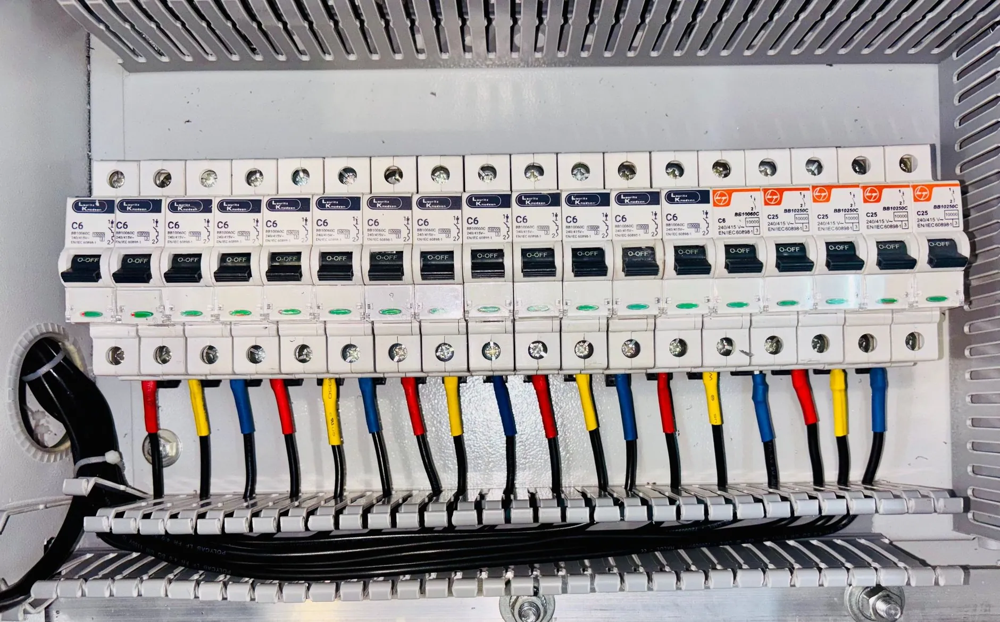
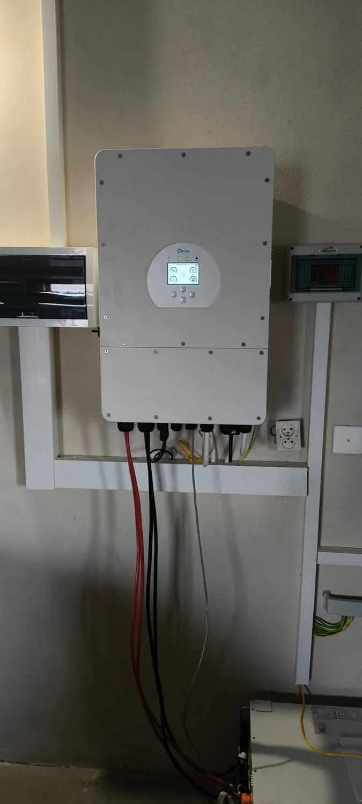
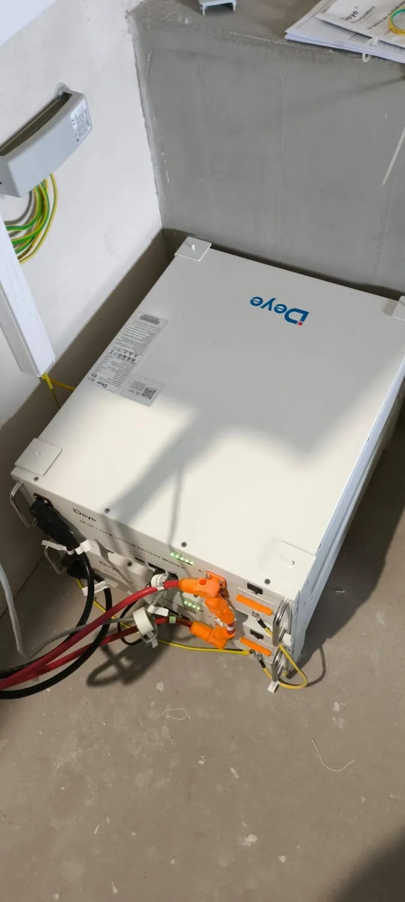
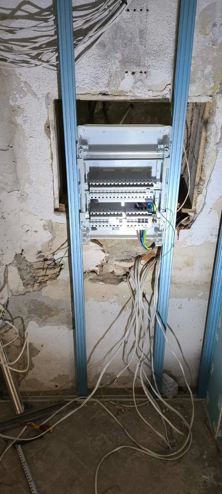
Co mówią klienci
Skorzystałem z usługi Pana Mateusza, montował automatykę bramy zewnętrznej oraz oświetlenie na ogrodzie wraz ze sterowaniem. Fachowo i za rozsądne pieniądze w porównaniu do innych firm. PolecamPiotr Wójtowicz
Szybko, taniej w porównaniu do innych firm, wykonanie godne polecenia. Robili mi instalację w domu i jestem bardzo zadowolony, dobry kontakt, doradztwo i przede wszystkim fachowe wykonanie. Są na czasie z wszystkimi nowinkami w branży.Tomasz Mazur
Polecam usługi firmy Mat-Mar. Doświadczenie, profesjonalna wiedza, staranność w realizacji oraz terminowość zadania.Alicja

Srebrny medal Orłów Instalatorstwa 2025
Nagroda w ogólnopolskim plebiscycie dla firm instalatorskich, przyznawana na podstawie opinii klientów. Obok niej 4,9 gwiazdki w Google z 14 opinii.
Dojeżdżam do Ciebie
Pracuję na Śląsku, na Opolszczyźnie i na Dolnym Śląsku. Baza jest w Kędzierzynie-Koźlu, ale przy większych zleceniach przemysłowych dojeżdżam dalej - wystarczy zapytać przy telefonie.
- Kędzierzyn-Koźle
- śląskie
- opolskie
- dolnośląskie
Dobrze wiedzieć
Ile to będzie kosztowało?
Sztywnych stawek nie podaję, bo każdy obiekt liczy się inaczej - inaczej hala produkcyjna, inaczej biuro, inaczej sama brama. Zapytaj, wycenimy: opowiedz przez telefon, co trzeba zrobić, a przy większych robotach przyjadę i obejrzę na miejscu.
Pracujesz dla firm czy dla domów?
Dla jednych i drugich, ale większość roboty to instalacje przemysłowe i pomiary linii technologicznych. Dom czy mieszkanie też zrobię - po prostu rzadziej.
Jakie masz uprawnienia?
SEP eksploatacyjne, dozorowe i pomiarowe. Pomiary podpisuję własnym nazwiskiem, więc protokół jest pełnoprawnym dokumentem do odbioru i do ubezpieczyciela.
Czy jesteś autoryzowanym przedstawicielem Beninki?
Tak - jestem przedstawicielem, dystrybutorem i serwisem automatyki bramowej BENINCA. Sprzęt mam z pierwszej ręki, a serwisuję też napędy, których nie montowałem.
Czy pracujesz sam?
Przy większych instalacjach pracuję ze stałymi współpracownikami, więc na hali robi kilka osób naraz. Ustalenia i wycenę prowadzę osobiście.
Czy da się zrobić bez zatrzymywania produkcji?
Część prac tak, część wymaga postoju. Ustalamy okno z wyprzedzeniem i przygotowuję wszystko wcześniej, żeby linia stanęła raz, na możliwie krótko.
Zapytaj, wycenimy.
Zadzwoń lub napisz - obejrzę, powiem co i jak, i podam konkretną cenę. Bez zobowiązań. Przy awarii podpowiem przez telefon, co wyłączyć, zanim dojadę.